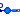
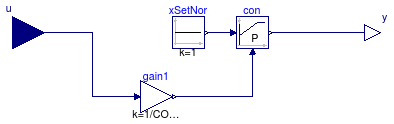
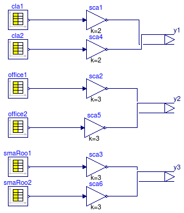
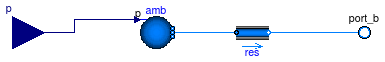

This package contains base classes that are used to construct the models in Buildings.Examples.VAVCO2.
Extends from Modelica.Icons.BasesPackage (Icon for packages containing base classes).
| Name | Description |
|---|---|
| DamperControl | Local loop controller for damper |
| Occupancy | Model for occupancy |
|  RoomLeakage | Room leakage model |
| RoomVAV | Model for CO2 emitted by people |
| Suite | Model of a suite consisting of five rooms of the MIT system model |

| Type | Name | Default | Description |
|---|---|---|---|
| Real | CO2Set | 700E-6 | CO2 set point in volume fraction |
| Real | Kp | 10 | Proportional gain |
| Type | Name | Description |
|---|---|---|
| input RealInput | u | Connector of Real input signal |
| output RealOutput | y | Connector of Real output signal |
block DamperControl "Local loop controller for damper" extends Modelica.Blocks.Interfaces.SISO; parameter Real CO2Set = 700E-6 "CO2 set point in volume fraction"; parameter Real Kp = 10 "Proportional gain";protected Modelica.Blocks.Sources.Constant xSetNor(k=1) "CO2 set point (normalized)"; public Buildings.Controls.Continuous.LimPID con( yMin=0, y_start=0.5, Ti=1, controllerType=Modelica.Blocks.Types.SimpleController.P, k=Kp, limiter(u(start=0.75)), yMax=1, reverseAction=true, Td=60); protected Modelica.Blocks.Math.Gain gain1(k=1/CO2Set) "Gain. Division by CO2Set is to normalize the control error"; equationconnect(con.y, y); connect(xSetNor.y, con.u_s); connect(gain1.y, con.u_m); connect(u, gain1.u); end DamperControl;

| Type | Name | Description |
|---|---|---|
| output RealOutput | y1[2] | Connector of Real output signals |
| output RealOutput | y2[2] | Connector of Real output signals |
| output RealOutput | y3[2] | Connector of Real output signals |
model Occupancy "Model for occupancy"Modelica.Blocks.Sources.CombiTimeTable office1( extrapolation=Modelica.Blocks.Types.Extrapolation.Periodic, tableOnFile=false, table=[0.0,0.0; 8*3600,0; 8*3600,2; 9*3600,2; 9*3600,3; 12*3600,3; 12*3600, 2; 13*3600,2; 13*3600,6; 15*3600,6; 15*3600,3; 16*3600,3; 16*3600,4; 18*3600,4; 18*3600,0; 24*3600,0]) "Office with double occupancy"; Modelica.Blocks.Sources.CombiTimeTable office2( extrapolation=Modelica.Blocks.Types.Extrapolation.Periodic, tableOnFile=false, table=[0.0,0.0; 8*3600,0; 8*3600,2; 9*3600,2; 9*3600,3; 12*3600,3; 12*3600, 2; 13*3600,2; 13*3600,5; 15*3600,5; 15*3600,3; 16*3600,3; 16*3600,6; 18*3600,6; 18*3600,0; 24*3600,0]) "Office with double occupancy"; Modelica.Blocks.Sources.CombiTimeTable cla1( extrapolation=Modelica.Blocks.Types.Extrapolation.Periodic, tableOnFile=false, table=[0.0,0.0; 8*3600,0; 8*3600,25; 9*3600,25; 9*3600,20; 10*3600,20; 10*3600,30; 12*3600,30; 12*3600, 0; 13*3600,0; 13*3600,30; 15*3600,30; 15*3600,40; 16*3600,40; 16*3600,20; 18*3600,20; 18*3600,0; 24*3600,0]) "Class room"; Modelica.Blocks.Sources.CombiTimeTable cla2( extrapolation=Modelica.Blocks.Types.Extrapolation.Periodic, tableOnFile=false, table=[0.0,0.0; 8*3600,0; 8*3600,20; 9*3600,20; 9*3600,10; 10*3600,10; 10*3600,20; 11*3600,20; 11*3600,15; 12*3600,15; 12*3600, 0; 13*3600,0; 13*3600,30; 15*3600,30; 15*3600,20; 16*3600,20; 16*3600,25; 18*3600,25; 18*3600,0; 24*3600,0]) "Class room"; Modelica.Blocks.Sources.CombiTimeTable smaRoo1( extrapolation=Modelica.Blocks.Types.Extrapolation.Periodic, tableOnFile=false, table=[0.0,0.0; 8*3600,0; 8*3600,0.4; 9*3600,0.4; 9*3600,1; 10*3600,1; 10*3600,0.4; 12*3600,0.4; 12*3600,1; 13*3600,1; 13*3600,0.5; 14*3600,0.5; 14*3600,1.0; 16*3600,1.0; 16*3600,0.5; 18*3600,0.5; 18*3600,0; 24*3600,0]) "Small rooms"; Modelica.Blocks.Sources.CombiTimeTable smaRoo2( extrapolation=Modelica.Blocks.Types.Extrapolation.Periodic, tableOnFile=false, table=[0.0,0.0; 8*3600,0; 8*3600,0.4; 9*3600,0.4; 9*3600,1; 10*3600,1; 10*3600,0.4; 12*3600,0.4; 12*3600,1; 13*3600,1; 13*3600,0.3; 14*3600,0.3; 14*3600,0.4; 16*3600,0.4; 16*3600,0.2; 18*3600,0.2; 18*3600,0; 24*3600,0]) "Small rooms"; Modelica.Blocks.Interfaces.RealOutput y1[2] "Connector of Real output signals"; Modelica.Blocks.Interfaces.RealOutput y2[2] "Connector of Real output signals"; Modelica.Blocks.Interfaces.RealOutput y3[2] "Connector of Real output signals"; Modelica.Blocks.Math.Gain sca1(k=2) "Scaling for occupancy"; Modelica.Blocks.Math.Gain sca2(k=3) "Scaling for occupancy"; Modelica.Blocks.Math.Gain sca3(k=3) "Scaling for occupancy"; Modelica.Blocks.Math.Gain sca4(k=2) "Scaling for occupancy"; Modelica.Blocks.Math.Gain sca5(k=3) "Scaling for occupancy"; Modelica.Blocks.Math.Gain sca6(k=3) "Scaling for occupancy"; equationconnect(cla1.y[1], sca1.u); connect(cla2.y[1], sca4.u); connect(office1.y[1], sca2.u); connect(office2.y[1], sca5.u); connect(smaRoo1.y[1], sca3.u); connect(smaRoo2.y[1], sca6.u); connect(sca1.y, y1[1]); connect(sca4.y, y1[2]); connect(sca2.y, y2[1]); connect(sca5.y, y2[2]); connect(sca3.y, y3[1]); connect(sca6.y, y3[2]); end Occupancy;

Room leakage used in the MIT system model.
Extends from Buildings.BaseClasses.BaseIcon (Base icon).
| Type | Name | Default | Description |
|---|---|---|---|
| replaceable package Medium | Modelica.Media.Interfaces.Pa... | Medium in the component | |
| Type | Name | Description |
|---|---|---|
| replaceable package Medium | Medium in the component | |
| input RealInput | p | Pressure |
| FluidPort_b | port_b | |
model RoomLeakage "Room leakage model"
extends Buildings.BaseClasses.BaseIcon;
replaceable package Medium =
Modelica.Media.Interfaces.PartialMedium "Medium in the component";
Buildings.Fluid.FixedResistances.FixedResistanceDpM res(
m_flow_nominal=1,
redeclare package Medium = Medium,
dp_nominal=1000) "Resistance model";
Modelica.Blocks.Interfaces.RealInput p "Pressure";
Modelica.Fluid.Interfaces.FluidPort_b port_b(redeclare package Medium =
Medium);
Buildings.Fluid.Sources.Boundary_pT amb( redeclare package Medium
= Medium,
nPorts=1,
use_p_in=true,
p=101325,
T=293.15);
equation
connect(res.port_b, port_b);
connect(p, amb.p_in);
connect(amb.ports[1], res.port_a);
end RoomLeakage;
| Type | Name | Default | Description |
|---|---|---|---|
| replaceable package Medium | Modelica.Media.Interfaces.Pa... | Medium in the component | |
| replaceable model MotorModel | Buildings.Fluid.Actuators.Mo... | ||
| Volume | VRoo | Volume of room [m3] | |
| Volume | VPle | Volume of plenum [m3] | |
| Area | ADam | Damper face area [m2] | |
| MassFlowRate | m_flow_nominal | Nominal mass flow rate [kg/s] | |
| Type | Name | Description |
|---|---|---|
| replaceable package Medium | Medium in the component | |
| replaceable model MotorModel | ||
| FluidPort_a | portRoo1 | Fluid port |
| FluidPort_a | portSup | Fluid port |
| FluidPort_a | portRet | Fluid port |
| FluidPort_a | portRoo2 | Fluid port |
| output RealOutput | yDam | Damper control signal |
| input RealInput | nPeo | Number of people |
model RoomVAV "Model for CO2 emitted by people"
replaceable package Medium =
Modelica.Media.Interfaces.PartialMedium "Medium in the component";
replaceable model MotorModel = Buildings.Fluid.Actuators.Motors.IdealMotor(delta=0.02, tOpe=60);
Fluid.Actuators.Dampers.VAVBoxExponential vav(
redeclare package Medium = Medium,
A=ADam,
m_flow_nominal=m_flow_nominal,
dp_nominal=1E2,
allowFlowReversal=false,
from_dp=false);
Buildings.Fluid.MixingVolumes.MixingVolume vol(
redeclare package Medium = Medium,
V=VRoo,
nPorts=6,
m_flow_nominal=m_flow_nominal,
energyDynamics=Modelica.Fluid.Types.Dynamics.FixedInitial) "Room volume";
Buildings.Fluid.Sensors.TraceSubstances senCO2( redeclare package
Medium =
Medium) "Sensor at volume";
Buildings.Fluid.Sources.PrescribedExtraPropertyFlowRate sou(redeclare package
Medium = Medium, use_m_flow_in=true,
nPorts=1) "CO2 source";
parameter Modelica.SIunits.Volume VRoo "Volume of room";
Buildings.Fluid.MixingVolumes.MixingVolume ple(
redeclare package Medium = Medium,
V=VPle,
nPorts=2,
m_flow_nominal=m_flow_nominal,
energyDynamics=Modelica.Fluid.Types.Dynamics.FixedInitial) "Plenum volume";
parameter Modelica.SIunits.Volume VPle "Volume of plenum";
Modelica.Fluid.Interfaces.FluidPort_a portRoo1(redeclare package Medium =
Medium) "Fluid port";
Modelica.Fluid.Interfaces.FluidPort_a portSup(redeclare package Medium =
Medium) "Fluid port";
Modelica.Fluid.Interfaces.FluidPort_a portRet(redeclare package Medium =
Medium) "Fluid port";
Modelica.Fluid.Interfaces.FluidPort_a portRoo2(redeclare package Medium =
Medium) "Fluid port";
Modelica.Blocks.Interfaces.RealOutput yDam "Damper control signal";
parameter Modelica.SIunits.Area ADam "Damper face area";
parameter Modelica.SIunits.MassFlowRate m_flow_nominal
"Nominal mass flow rate";
Modelica.Blocks.Interfaces.RealInput nPeo "Number of people";
Modelica.Blocks.Math.Gain gaiCO2(k=8.18E-6) "CO2 emission per person";
Fluid.Sensors.Conversions.To_VolumeFraction volFraCO2(
MMMea=Modelica.Media.
IdealGases.Common.SingleGasesData.CO2.MM) "CO2 volume fraction";
DamperControl con(Kp=1) "Damper controller";
Modelica.Blocks.Math.Gain peoDen(k=2.5/VRoo) "People density per m2";
//res(dp_nominal=5, m_flow_nominal=1.2/3600))
Modelica.Blocks.Sources.RealExpression vavACH(y=vav.m_flow*3600/VRoo/1.2)
"VAV box air change per hour";
Fluid.FixedResistances.FixedResistanceDpM dpPle(
redeclare package Medium = Medium,
m_flow_nominal=m_flow_nominal,
dp_nominal=20,
from_dp=true,
allowFlowReversal=false);
equation
connect(gaiCO2.y, sou.m_flow_in);
connect(senCO2.C, volFraCO2.m);
connect(volFraCO2.V, con.u);
connect(con.y, yDam);
connect(con.y, vav.y);
connect(ple.ports[1], portRet);
connect(nPeo, gaiCO2.u);
connect(nPeo, peoDen.u);
connect(portSup, vav.port_a);
connect(portRoo1, vol.ports[1]);
connect(vav.port_b, vol.ports[2]);
connect(senCO2.port, vol.ports[3]);
connect(portRoo2, vol.ports[4]);
connect(sou.ports[1], vol.ports[5]);
connect(dpPle.port_a, vol.ports[6]);
connect(dpPle.port_b, ple.ports[2]);
end RoomVAV;
Model of a suite consisting of five rooms for the MIT system model.
| Type | Name | Default | Description |
|---|---|---|---|
| replaceable package Medium | Modelica.Media.Interfaces.Pa... | Medium in the component | |
| Real | scaM_flow | Scaling factor for mass flow rate | |
| MassFlowRate | m0Tot_flow | scaM_flow*(5.196 + 2.8428 + ... | [kg/s] |
| Type | Name | Description |
|---|---|---|
| replaceable package Medium | Medium in the component | |
| input RealInput | p | Pressure |
| FluidPort_b | port_aSup | |
| FluidPort_b | port_bExh | |
| output RealOutput | p_rel | Relative pressure signal |
| output RealOutput | yDam[6] | VAV damper positions |
| output RealOutput | dPRoo | Room pressurization |
model Suite
"Model of a suite consisting of five rooms of the MIT system model"
replaceable package Medium =
Modelica.Media.Interfaces.PartialMedium "Medium in the component";
Modelica.Blocks.Interfaces.RealInput p "Pressure";
Modelica.Fluid.Interfaces.FluidPort_b port_aSup(redeclare package Medium =
Medium);
parameter Real scaM_flow "Scaling factor for mass flow rate";
parameter Modelica.SIunits.MassFlowRate m0Tot_flow=
scaM_flow*(5.196+2.8428+1.0044+0.9612+0.3624+0.1584);
Buildings.Fluid.FixedResistances.SplitterFixedResistanceDpM spl34(
redeclare package Medium = Medium,
m_flow_nominal=scaM_flow*{1,-1,-1},
dp_nominal={0.176,-0.844,-0.0662});
Buildings.Fluid.FixedResistances.SplitterFixedResistanceDpM mix55(
redeclare package Medium = Medium,
m_flow_nominal=scaM_flow*{-1,1,1},
dp_nominal=1E3*{-0.263200E-02,0.999990E-03,0.649000E-03});
Buildings.Fluid.FixedResistances.FixedResistanceDpM res13(
m_flow_nominal=scaM_flow*1, dp_nominal=0.1E3,
redeclare package Medium = Medium);
Buildings.Fluid.FixedResistances.FixedResistanceDpM res14(
m_flow_nominal=scaM_flow*1, dp_nominal=0.1E3,
redeclare package Medium = Medium);
Buildings.Fluid.FixedResistances.FixedResistanceDpM res15(
m_flow_nominal=scaM_flow*1, dp_nominal=0.1E3,
redeclare package Medium = Medium);
Buildings.Fluid.FixedResistances.FixedResistanceDpM res16(
m_flow_nominal=scaM_flow*1, dp_nominal=0.1E3,
redeclare package Medium = Medium);
Buildings.Fluid.FixedResistances.FixedResistanceDpM res17(
m_flow_nominal=scaM_flow*1, dp_nominal=0.1E3,
redeclare package Medium = Medium);
Buildings.Fluid.FixedResistances.SplitterFixedResistanceDpM spl35(
redeclare package Medium = Medium,
m_flow_nominal=scaM_flow*{1,-1,-1},
dp_nominal=1E3*{0.371000E-04,-0.259000E-02,-0.131000E-02});
Buildings.Fluid.FixedResistances.SplitterFixedResistanceDpM spl36(
redeclare package Medium = Medium,
m_flow_nominal=scaM_flow*{1,-1,-1},
dp_nominal=1E3*{0.211000E-03,-0.128000E-01,-0.223000E-02});
Buildings.Fluid.FixedResistances.SplitterFixedResistanceDpM spl37(
redeclare package Medium = Medium,
m_flow_nominal=scaM_flow*{1,-1,-1},
dp_nominal=1E3*{0.730000E-03,-0.128000E-01,-0.938000E-02});
Buildings.Fluid.FixedResistances.SplitterFixedResistanceDpM spl38(
redeclare package Medium = Medium,
m_flow_nominal=scaM_flow*{1,-1,-1},
dp_nominal=1E3*{0.731000E-02,-0.895000E-01,-0.942000E-01});
Buildings.Fluid.FixedResistances.SplitterFixedResistanceDpM mix54(
redeclare package Medium = Medium,
m_flow_nominal=scaM_flow*{-1,1,1},
dp_nominal=1E3*{-0.653000E-02,0.271000E-03,0.402000E-04});
Buildings.Fluid.FixedResistances.SplitterFixedResistanceDpM mix53(
redeclare package Medium = Medium,
m_flow_nominal=scaM_flow*{-1,1,1},
dp_nominal=1E3*{-0.566000E-01,0.541000E-02,0.749000E-04});
Buildings.Fluid.FixedResistances.SplitterFixedResistanceDpM mix52(
redeclare package Medium = Medium,
m_flow_nominal=scaM_flow*{-1,1,1},
dp_nominal=1E3*{-0.353960,0.494000E-03,0.922000E-03});
Buildings.Fluid.FixedResistances.SplitterFixedResistanceDpM mix51(
redeclare package Medium = Medium,
m_flow_nominal=scaM_flow*{-1,1,1},
dp_nominal=1E3*{-0.847600E-01,1.89750,0.150000E-02});
Modelica.Fluid.Interfaces.FluidPort_b port_bExh(redeclare package Medium =
Medium);
Buildings.Fluid.FixedResistances.FixedResistanceDpM res1(
m_flow_nominal=scaM_flow*1, dp_nominal=0.1E3,
redeclare package Medium = Medium);
RoomVAV roo45(
redeclare package Medium = Medium,
ADam=scaM_flow*0.49,
m_flow_nominal=scaM_flow*5.196,
VRoo=1820,
VPle=396) "Room model";
RoomVAV roo46(
redeclare package Medium = Medium,
ADam=scaM_flow*0.245,
m_flow_nominal=scaM_flow*2.8428,
VRoo=1210,
VPle=330) "Room model";
RoomVAV roo47(
redeclare package Medium = Medium,
ADam=scaM_flow*0.128,
m_flow_nominal=scaM_flow*1.0044,
VRoo=647,
VPle=125) "Room model";
RoomVAV roo48(
redeclare package Medium = Medium,
ADam=scaM_flow*0.128,
m_flow_nominal=scaM_flow*0.9612,
VRoo=385,
VPle=107) "Room model";
RoomVAV roo49(
redeclare package Medium = Medium,
ADam=scaM_flow*0.0494,
m_flow_nominal=scaM_flow*0.3624,
VRoo=48,
VPle=13) "Room model";
RoomVAV roo50(
redeclare package Medium = Medium,
ADam=scaM_flow*0.024,
m_flow_nominal=scaM_flow*0.1584,
VRoo=155,
VPle=43) "Room model";
Occupancy occ "Occupancy";
Buildings.Fluid.Sensors.RelativePressure dpMea( redeclare package Medium =
Medium) "Static pressure measurement";
Modelica.Blocks.Interfaces.RealOutput p_rel "Relative pressure signal";
Modelica.Blocks.Interfaces.RealOutput yDam[6] "VAV damper positions";
Buildings.Fluid.Sensors.Pressure pRoo(redeclare package Medium = Medium)
"Room pressure";
Modelica.Blocks.Math.Feedback feeBac;
Modelica.Blocks.Interfaces.RealOutput dPRoo "Room pressurization";
equation
connect(spl38.port_2, roo50.portSup);
connect(port_aSup, spl34.port_1);
connect(spl34.port_2, spl35.port_1);
connect(spl35.port_2, spl36.port_1);
connect(spl36.port_2, spl37.port_1);
connect(spl37.port_2, spl38.port_1);
connect(dpMea.port_a, spl38.port_1);
connect(pRoo.p, feeBac.u2);
connect(roo50.portRoo2, pRoo.port);
connect(spl34.port_3, roo45.portSup);
connect(spl35.port_3, roo46.portSup);
connect(spl36.port_3, roo47.portSup);
connect(spl37.port_3, roo48.portSup);
connect(spl38.port_3, roo49.portSup);
connect(dpMea.port_b, res16.port_b);
connect(p, feeBac.u1);
connect(dPRoo, feeBac.y);
connect(dpMea.p_rel, p_rel);
connect(roo45.yDam, yDam[1]);
connect(roo46.yDam, yDam[2]);
connect(roo47.yDam, yDam[3]);
connect(roo48.yDam, yDam[4]);
connect(roo49.yDam, yDam[5]);
connect(roo50.yDam, yDam[6]);
connect(occ.y1[1], roo45.nPeo);
connect(occ.y1[2], roo46.nPeo);
connect(occ.y2[1], roo47.nPeo);
connect(occ.y2[2], roo48.nPeo);
connect(occ.y3[1], roo49.nPeo);
connect(occ.y3[2], roo50.nPeo);
connect(port_bExh, mix55.port_1);
connect(mix55.port_2, mix54.port_1);
connect(mix54.port_2, mix53.port_1);
connect(mix53.port_2, mix52.port_1);
connect(mix52.port_2, mix51.port_1);
connect(mix51.port_2, roo50.portRet);
connect(roo48.portRet, mix51.port_3);
connect(mix52.port_3, roo49.portRet);
connect(roo47.portRet, mix53.port_3);
connect(roo46.portRet, mix54.port_3);
connect(roo45.portRet, mix55.port_3);
connect(res1.port_b, roo45.portRoo1);
connect(roo45.portRoo2, res13.port_a);
connect(res13.port_b, roo46.portRoo1);
connect(roo46.portRoo2, res14.port_a);
connect(res14.port_b, roo47.portRoo1);
connect(roo47.portRoo2, res15.port_a);
connect(res15.port_b, roo48.portRoo1);
connect(roo48.portRoo2, res16.port_a);
connect(res16.port_b, roo49.portRoo1);
connect(roo49.portRoo2, res17.port_a);
connect(res17.port_b, roo50.portRoo1);
connect(roo50.portRoo2, res1.port_a);
end Suite;